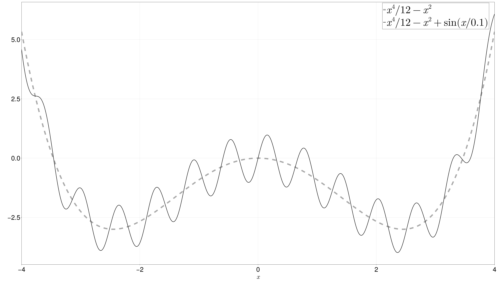

Home
This is the documentation website for "MDE for Multiscale"! For detailed theoretical and numerical information on the minimum distance estimation (MDE) method please refer to the accompanying article XXX.
In order to use the module, clone the GitHub repository to your local machine, navigate through the Terminal to the root directory containing the Project.toml file, start Julia and activate the project in the Terminal via
$ julia --project=.Then hit ] and instantiate the packages in the project
(MDEforM) pkg> instantiate You may now use the module's functionality
julia> using MDEforMThe functions listed under Index are exported by the module and thorough documentation of these functions can be found in the following list of Contents.
Toy Example
We want to provide a small example to illustrate the main functionality of the module. We start from the following 2-dimensional fast-slow system of stochastic differential equations (SDE)
\[\begin{aligned} dX_ϵ(t) = -α V'(X_ϵ(t)) - \frac{1}{ϵ} p'\left( \frac{X_ϵ(t)}{ϵ} \right) dt + \sqrt{2 σ} dU(t), \quad &X_ϵ(0) = x_0, \\ dY_ϵ(t) = -\frac{α}{ϵ} V'(X_ϵ(t)) - \frac{1}{ϵ^2} p'\left( Y_ϵ(t) \right) dt + \sqrt{\frac{2 σ}{ϵ^2}} dU(t), \quad &Y_ϵ(0) = y_0. \end{aligned}\]
Here, $V$ is a so-called large-scale potential, $p$ is a $2\pi$-periodic function, $U$ is a standard Brownian motion, and the parameters $\alpha, \sigma, \epsilon$ are strictly positive. An examplatory function constellation for $V$ and $p$ is provided by the function NLDO.
Here is a self-explanatory graphic of $V$ and $V + p$:
When $\epsilon$ converges to zero, then, by homogenization theory, the process $X_\epsilon$ converges weakly in $C([0, T]; \R)$ to the process $X$ solving the SDE
\[\begin{aligned} dX(t) = -α K V'(X(t)) dt + \sqrt{2 σ K} dW(t), \quad &X(0) = X_0, \end{aligned}\]
where $K>0$ is a corrective constant that comes from the cell problem of the homogenization, see also K. The task is to estimate the parameter $\vartheta := \alpha K$ through data that comes in form of a long trajectory of the process $X_\epsilon$ with "small" $\epsilon > 0$. We will use the MDE for the estimation. First, we generate synthetic data with the function Langevin_ϵ. The plot of a trajectory, created with produce_trajectory, looks like the following.
# quadratic potential V with sine oscillation p
T = 10
trajectory = Langevin_ϵ(5.0, func_config=LDO(), α=2.0, σ=1.0, ϵ=0.1, T=T)
fig = produce_trajectory(trajectory, T)We now increase the time horizon $T$ to obtain accurate estimates for $\vartheta$.
data = Langevin_ϵ(5.0, func_config=LDO(), α=2.0, σ=1.0, ϵ=0.1, T=1000)[1] # only slow processUnder this configuration the true parameter $\vartheta$ is given by
ϑ = 2.0*K(LDO()[3], 1.0)1.2477207208641388We can now use the MDE to estimate $\vartheta$. Due to parameter identification issues we must also provide the limit diffusion parameter $\Sigma := \sigma K$ as input.
MDE_value = MDE(data, "Langevin", 1.0*K(LDO()[3], 1.0), 10.0)1-element Vector{Float64}:
1.2502564151812057As we can see the MDE is capable of retrieving the true parameter with multiscale data.
Contents
- Multiscale System and Homogenized Limit Pairs
- Invariant Densities
- Cost Functionals for the MDE
- Optimization Task of the MDE
- Asymptotic Variances of the MDE
Index
MDEforM.Burger_ϵMDEforM.Burger_∞MDEforM.Fast_OU_ϵMDEforM.Fast_OU_∞MDEforM.Fast_chaotic_ϵMDEforM.Fast_chaotic_∞MDEforM.KMDEforM.LDAMDEforM.LDOMDEforM.Langevin_ϵMDEforM.Langevin_ϵ_2DMDEforM.Langevin_∞MDEforM.Langevin_∞_2DMDEforM.MDEMDEforM.NLDAMMDEforM.NLDOMDEforM.NSDPMDEforM.kMDEforM.produce_trajectoryMDEforM.ΔMDEforM.Δ_Gaussian1DMDEforM.Δ_Gaussian1D_gradMDEforM.Δ_Gaussian2DMDEforM.Δ_grad_ΣMDEforM.Δ_grad_ϑMDEforM.Σ_∞_QdPMDEforM.Σ_∞_QrPMDEforM.μMDEforM.∂Σ_μMDEforM.∂ϑ_μ